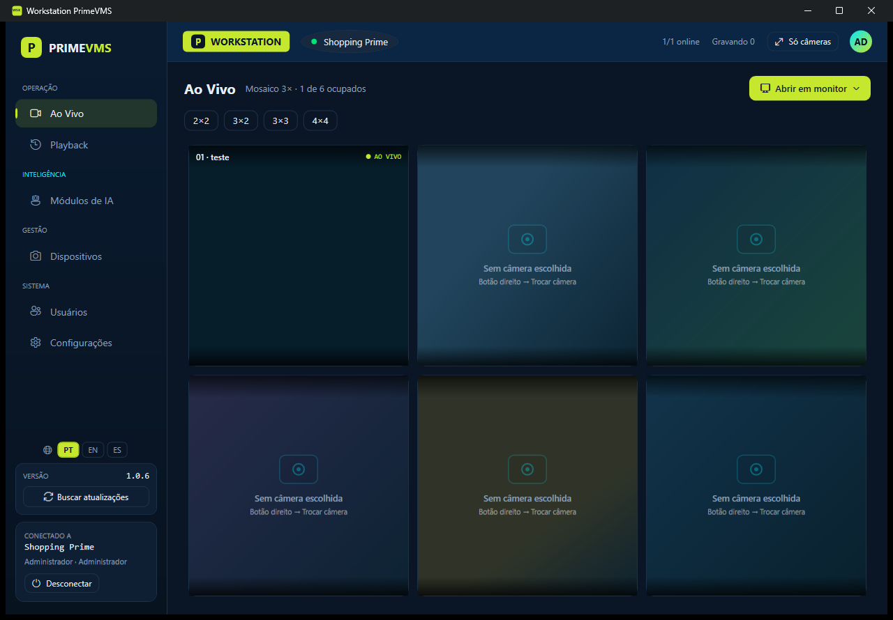

Software VMS para câmeras IP
O Nexa VMS é um sistema profissional de gerenciamento de vídeo para CFTV. Assista ao vivo, grave 24 horas por dia e revise as imagens de qualquer câmera ONVIF ou RTSP. Comece pela edição Free, para até 16 câmeras, e passe para o Basic ou o Professional quando precisar de mais.

O essencial de um VMS
Ao vivo, gravação, playback e exportação estão em todas as edições. O mesmo software atende de um único computador até vários servidores.
Funciona com as suas câmeras
Encontra as câmeras ONVIF na rede e detecta o caminho do vídeo RTSP. Você informa só o usuário e a senha da câmera.
Gravação contínua
Grava em disco em MP4 segmentado, sem recodificação, com catálogo de gravações e retenção por dias.
Ao vivo
Mosaicos de até 4×4, tela cheia, vários monitores e vídeo wall, com decodificação acelerada por hardware.
Playback
Até 16 câmeras no mesmo relógio, reprodução para trás, busca por movimento e exportação assinada.
Exportação
Exporte imagens e vídeos com marca d'água com o seu logotipo, a data e a hora.
Usuários e perfis
Perfis de administrador, supervisor e operador, aplicados pelo servidor.
Instalação distribuída
Rode tudo em um PC ou use um servidor central com estações de operação. Vários servidores de gravação e de IA fazem parte do Professional.
Atualização pelo app
Só os arquivos alterados são baixados, normalmente cerca de 1 MB. As versões são assinadas e uma falha na atualização é revertida automaticamente.
Edições
Free até 16 câmeras. Basic até 32. Professional por câmera, até 500 por servidor. Enterprise, em breve. Workstations e usuários sem limite em todas as edições.
Free
- Até 16 câmeras em um site Windows
- Ao vivo, gravação, playback e exportação
- Gravação de até 3 dias
- IA com cota de horas
- Workstations e usuários sem limite
- Atualizações enquanto a conta estiver ativa
Basic
- Até 32 câmeras em um site Windows
- Gravação limitada só pelo disco
- IA opcional, contratada por canal
- Workstations e usuários sem limite
- Perpétua com 1 ano de manutenção, ou assinatura
Professional
- Até 500 câmeras por servidor
- Vários Storages e Servidores de IA
- Servidor de reserva (N+1)
- IA por canal (câmera e módulo) ou IA de site
- Workstations e usuários sem limite
- Perpétua com 1 ano de manutenção, ou assinatura
A instalação é ativada com uma conta Nexa VMS criada em nexavms.io, e a primeira ativação inclui 30 dias de avaliação do Professional. Enterprise, com alta disponibilidade, chega em breve. Preços em dólar em nexavms.io/precos.
Como o Nexa VMS se compara
O que muda em relação a um VMS comum.
| NexaVMS | VMS comum | |
|---|---|---|
| Para começar | Free até 16 câmeras, sem custo e sem prazo | Muitas vezes só avaliação com prazo |
| Workstations e usuários | Sem limite em todas as edições | Muitas vezes licenciados por estação ou usuário |
| Câmeras | Qualquer câmera ONVIF ou RTSP | Muitas vezes preso a uma marca |
| Implantação | Um instalador, de um PC até distribuído | Produtos ou edições separados |
| Atualizações | Pelo app, com reversão automática | Baixar e reinstalar |
| Analíticos de IA | No mesmo software, por canal ou por site | Muitas vezes um produto separado |
Como funciona
Um instalador com três componentes. Instale em um PC ou distribua pela sua rede.
Storage
O servidor de gravação. Recebe o vídeo RTSP de cada câmera, grava em disco, aplica a retenção e entrega o vídeo ao vivo e gravado.
System Manager
O servidor central. Guarda câmeras, usuários e permissões, e define qual servidor grava cada câmera.
Workstation
O aplicativo do operador. Mosaicos ao vivo, linha do tempo de playback, vários monitores e exportação.
Perguntas frequentes
O Nexa VMS é gratuito?
A edição Free é gratuita e sem prazo, para até 16 câmeras em um site Windows, com gravação de até 3 dias e uma cota de horas de IA. Basic e Professional são vendidos por câmera, como licença perpétua com 1 ano de manutenção ou como assinatura. Os preços, em dólar, estão em nexavms.io/precos.
Preciso ativar a instalação?
Sim. A instalação é ativada pelo Console do System Manager com uma conta Nexa VMS criada em nexavms.io. Sem ativação, o sistema não grava nem mostra vídeo. A primeira ativação inclui 30 dias de avaliação do Professional; depois, a instalação volta para o Free se nenhuma licença for comprada.
Quais câmeras são compatíveis?
Qualquer câmera IP com ONVIF ou RTSP. O Nexa VMS encontra as câmeras ONVIF na rede e detecta o caminho do vídeo.
Ele substitui um NVR?
O Nexa VMS grava as câmeras IP direto em um PC ou servidor Windows, com retenção por dias. Também grava a partir de gravadores existentes que disponibilizam RTSP.
Quantas câmeras posso adicionar?
Até 16 no Free e até 32 no Basic. No Professional, a licença é por câmera, até 500 por servidor, com vários Storages e Servidores de IA e servidor de reserva (N+1). A edição Enterprise, com alta disponibilidade, está em breve.
Como a IA é contratada?
Os analíticos de vídeo (contagem de pessoas, reconhecimento facial, placas, busca inteligente e proteção de perímetro) são contratados por canal, ou seja, por câmera e módulo, ou como IA de site. O Free inclui uma cota de horas de IA. No Free, o reconhecimento facial fica disponível só no modo demonstração e durante a avaliação.
Quais idiomas estão disponíveis?
Português (Brasil), inglês e espanhol, nos apps, no instalador e nas notas de versão.
Como abro uma exportação protegida (.pvx)?
A exportação protegida é cifrada com senha e só abre no Nexa Player, gratuito, para Windows. Baixe o Nexa Player, extraia o zip, abra o PrimePlayer.exe, escolha o arquivo .pvx e digite a senha. O Nexa Player mostra se cada vídeo está íntegro e assinado.
Comece pela edição Free
Baixe o instalador, ative com uma conta Nexa VMS e adicione suas câmeras. A primeira ativação inclui 30 dias de avaliação do Professional.